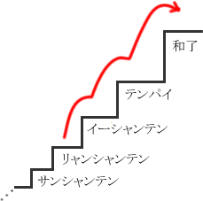

有效牌与枚数
麻将是手牌中1张不要的牌丢弃的作业的重复。
前次说了把和牌容易度最优先选择打牌是基本。
那么，具体以什么为指标选择比较好呢。
1. 枚数与概率
例1


例1只要  不是那么危险就切
不是那么危险就切  。
。
重新考虑一下吧。为什么切  或
或  是错误的。
是错误的。
当然切  的话待比较好。
的话待比较好。
实际比较一下吧。


 待
待


 待
待
作为待的枚数上面是7张，下面是3张。
当然，因为对家的手牌和王牌被隐藏了几张，所以不是纯粹7张、3张剩下。
 山里可能一张也没剩。
山里可能一张也没剩。
但是实际知道山里剩余枚数的方法没有。
我们不是超能力者。
现实是，用7张和3张这个理想值比较，判断  待比较有利，就可以了。
待比较有利，就可以了。
"枚数越多越有利"是麻将的基本原理。
无视这个基本，麻将就无法胜利。
|
的待的枚数多 = 的和牌概率高= 进张的得点多 |
用这样的思考打麻将很重要。
麻将不是比拼运气好的游戏，而是比拼得失感觉敏锐度的游戏。
2. 进张枚数
例1比较了听牌时的待，但在没听牌的手牌中也可以用枚数多·少比较手牌，那么应该丢弃的牌就明确了。

再拿出这个图吧。
在和牌远的阶段，考虑到和牌的最短距离很难。首先以到下一步（两向听则一向听）的最短距离为目标，考虑尽可能早地接近和牌。
用枚数考虑和牌容易度最简单的方法，是比较能降低向听数的牌的枚数。
例2


例2是两向听的手牌。
这个手牌中变成一向听的摸牌列举的话


 的7种23张。
的7种23张。
这就是"一向听的进张枚数"。
例3


例3和例2几乎相同的形，
七对子也是两向听所以


 牌是13种35张。
牌是13种35张。
比例2的进张枚数多得多，
比例2比重例3是好形是明白的。
这样，通过数进张枚数可以定量地评价手牌。
用进张枚数评价，之后的课程会做很多次。
3. 好形变化


 摸
摸
刚才用枚数表示的那样，
例2的形
摸  的情况切
的情况切  的话
的话
向听数保持两向听，但进张枚数增加
所以  也必须考虑是有效牌。
也必须考虑是有效牌。
有效牌有
A：降低向听数的牌（进张）
B：增加A的枚数的牌（好形变化）
这2种。
例4


 碰
碰 
 摸
摸 
例4是待牌的选择。
现状的双碰待，切  的嵌张待进张枚数也是4张相同。
的嵌张待进张枚数也是4张相同。
所以比较好形变化。


 摸
摸 
 枚数UP
枚数UP


 摸
摸  枚数UP
枚数UP
有三面变化，所以受双碰是正解吧。
这样进张枚数没有差的情况有比较好形变化的枚数的手法。这里重要的是，进张枚数比好形变化的枚数价值高。
首先只比较进张枚数是牌效率的基本。
A：降低向听数的牌（进张）
B：增加A的枚数的牌（好形变化）
有些人错误地同等处理A和B，用" A ＋ B "比较枚数。容易误解所以注意吧。